Gumiabroncsok
Gumiabroncsok széles választékával rendelkezünk különböző típusú autókra, teherautókra, mezőgazdasági gépjárművekre illetve motorokra. Kínálatunkban megtalálhatók a legismertebb márkák: Bridgestone, Continental, Michelin, Goodyear, Fulda, Sava és még sok más.
{kind=link}
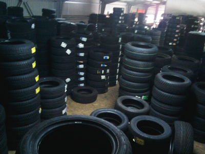
{kind=link}
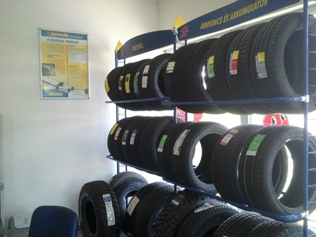
{kind=link}
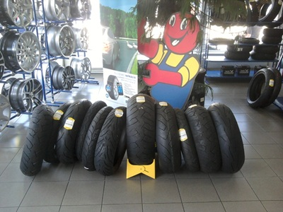
Alufelnik
Üzletünkben különböző átmérőjű, különböző lyuk kiosztású felniket is megtalál, akár acél akár alufelniről legyen szó. Választékunkban 13-tól 20 colos méretig kínálunk felniket, és szükség esetén a megfelelő kerékcsavarokat, kerékanyákat is megtalálja nálunk.
{kind=link}
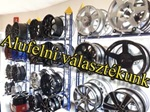
{kind=link}
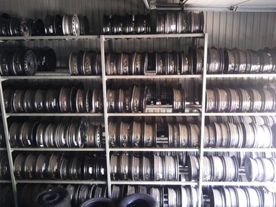
{kind=link}
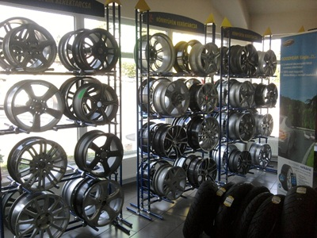
Olajcsere
Telephelyünkön a minőségi Castrol olaj mellett, magát az olajcserét is elvégezzük kedvezményes áron. Munkatársaink elvégzik a levegő- és pollenszűrő cseréjét is, ezzel gondoskodva jármüve optimális teljesítményéről.
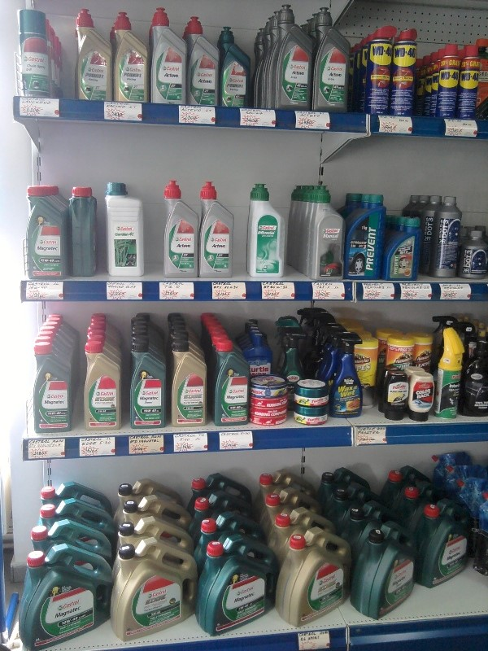
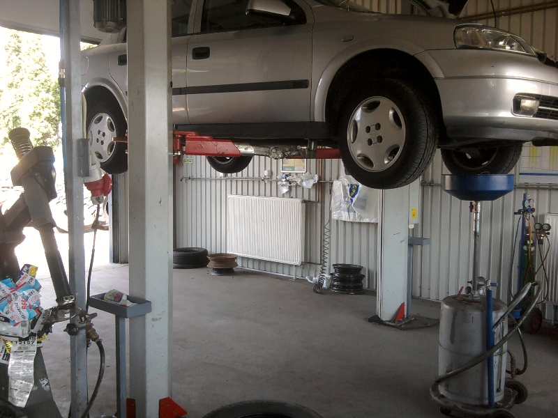
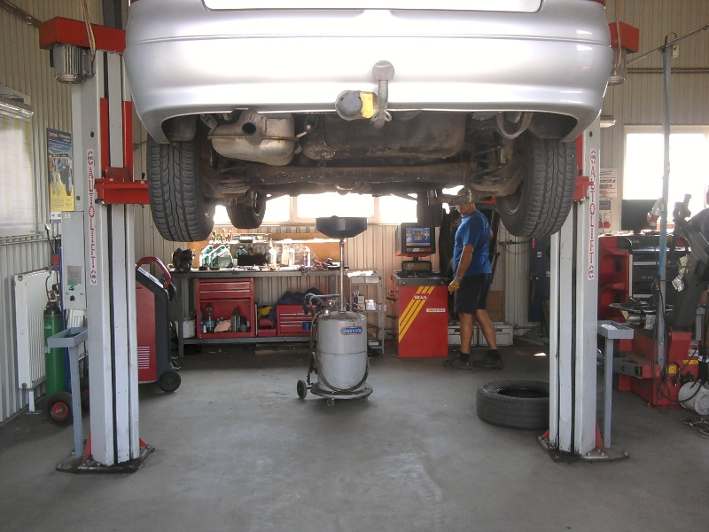
Futóműállítás
Személy és kisteher gépjárművekhez, 21"-os kerékátmérőig, számítógép alapú, 4 mérőfejes berendezés a kerék geometriai jellemzőinek mérésére. A lézeres futómű-beállítás biztosítja az egyenletes gumiabroncs-kopást és a biztonságos menetdinamikát.
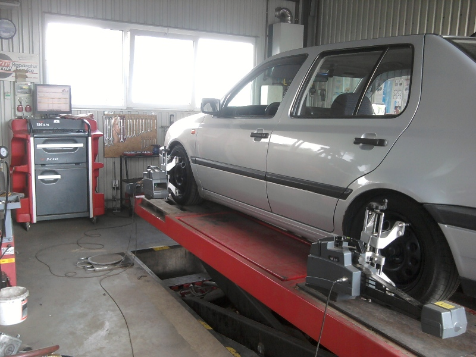
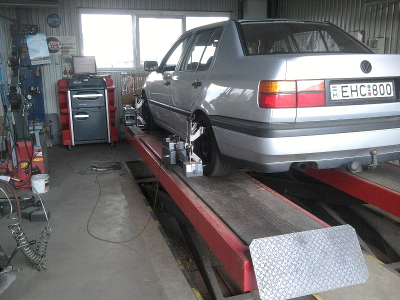

Gépjármű javítás
- Személy és tehergépjárművek, mezőgazdasági és földmunkagépek, targonca és motorkerékpár gumiabroncsainak szerelése és centrírozása
- Alu- és lemezfelnik javítása
- Futómű állítás
- Akkumulátor bevizsgálás és csere
- Olajcsere, levegő- és pollenszűrő csere
- Klíma ellenőrzés, töltés és tisztítás
- Motorkerékpárok gumiköpenyének szerelése, centrírozása, tömlős és tömlő nélküli kivitelben
- Cross, gyorsasági, chopper és quad motorok kerekeinek ki- beszerelése, defekt javítása, tömlő cseréje, sérült felni javítása korszerű emelőkkel és gépekkel
Kereskedelem
Üzletünkben az autófelszerelési termékek széles körét kínáljuk. Partnereink között megtalálható a Castrol, az Osram és a Prevent. Főbb termékcsoportjaink:
- Személy és tehergépjárművek, mezőgazdasági és földmunkagépek, targonca és motorkerékpár gumiabroncsainak kis- és nagykereskedelme
- Alu- és lemez felnik forgalmazása személy és tehergépjárművekhez
- Kerékcsavarok, kerékanyák, tőcsavarok, központosítógyűrűk forgalmazása
- Gumiabroncs tartozékok, tömlő, védőszalag, szelepek és javítóanyagok értékesítése
- Castrol motor- és váltó olajak, robogó, fűnyíró olajak, motor láncspray
- Fagyálló folyadék, téli és nyári szélvédőmosó, ioncserélt víz forgalmazása
- Prevent és Motip autóápolási termékek forgalmazása
- Osram és Hejalux izzók, izzókészletek
- Ablaktörlőlapátok, láthatósági mellény, elsősegélydoboz
- Hólánc teher- és személyautókhoz
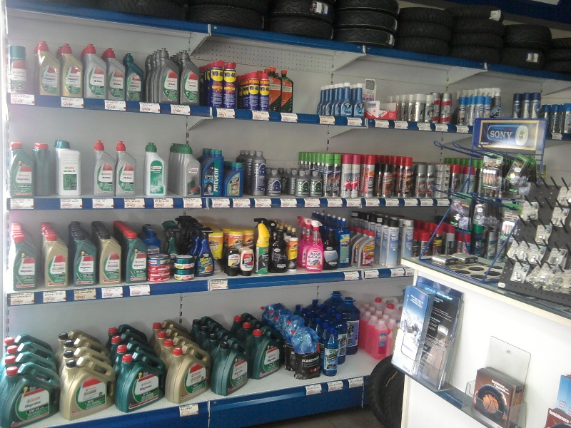
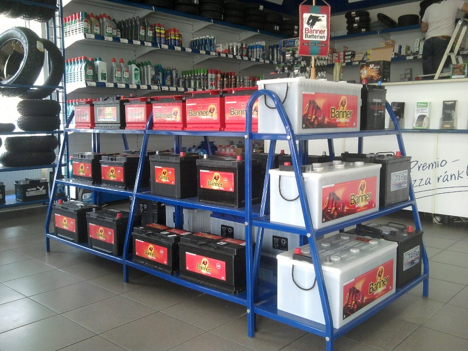
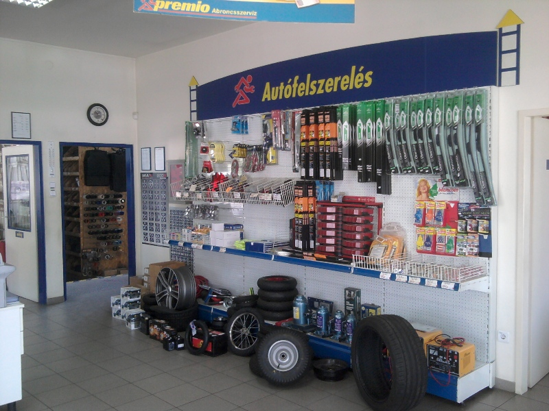